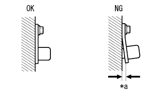
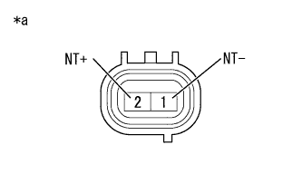
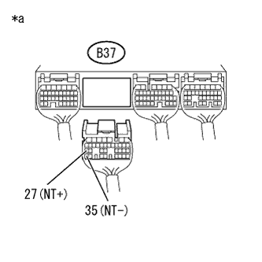

DTC P0717/37 Rpm Number Sensor system |
| DTC No. SAE/TCCS |
| Inspection site |
|---|---|---|
| P0717/37 |
|
|
| Step 1 | Mounting status inspection (transmission revolution sensor (NT)) |
|  |
Check the mounting status of the transmission revolution sensor (NT).
| *a | Gaps |
|
| ||||
| OK | |
| Step 2 | Transmission Revolution Sensor (NT) Single Inspection |
Separate the connector B8 of the transmission revolution sensor (NT).
|  |
Use SST (Toyota Electrical Tester) to measure resistance between terminals.
| Inspection terminal | Inspection condition | Reference value |
|---|---|---|
| 1 (NT-) --2 (NT+) | 20 ° C | 560 to 680Ω |
| *a | Connector non -connection status (Transmission Revolution Sensor (NT)) |
|
| ||||
| OK | |
| Step 3 | Wire harness and connector inspection (transmission revolution sensor (NT) -engine control computer) |
reference.Cut the connector B37 of the engine control computer.
|  |
Use SST (Toyota Electrical Tester) to measure resistance between terminals.
| Inspection terminal | Inspection condition | Reference value |
|---|---|---|
| B37-27 (NT+) --B37-35 (NT-) | 20 ° C | 560 to 680Ω |
| Inspection terminal | Inspection condition | Reference value |
|---|---|---|
| B37-27 (NT+) --Body Earth | Always | 10kΩ or higher |
| B37-35 (NT-) --Body Earth | Always | 10kΩ or higher |
| *a | Vehicle wire harness connector rear side (Engine control computer connection connector) |
|
| ||||
| OK | ||
| ||